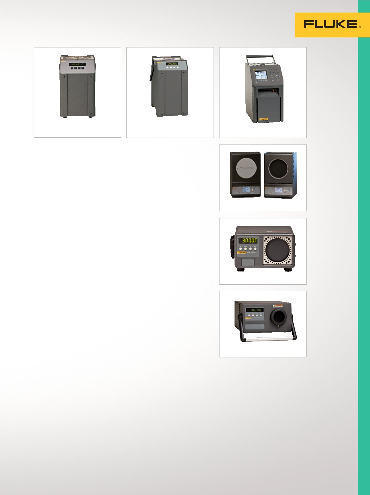

6102/7102/7103
9150
9170/9171/9172/9173
19
Étalonnage de la température
Four à thermocouple 9150
Four à thermocouple pratique
et portable.
•
–150 à 1 200 °C
•
Stabilité de ± 0,5 °C sur
toute la plage
•
Étalonnage traçable NIST inclus
•
Port RS-232 standard
•
Étalonnage identifiable NIST
6102/7102/7103 Micro-bains
Étalonnage de sondes de divers
diamètres, sans manchon.
•
Trois modèles couvrant des
températures de -30 °C à 200 °C
•
Les plus petits bains d’étalonnage
portables au monde
•
Stabilité à ± 0,015 °C
•
Étalonnage identifiable NIST
Puits de métrologie
9170/9171/9172/9173
La meilleure précision possible
dans un étalonneur à bloc sec
•
Meilleures sources de
températures industrielles au
monde (stabilité de quelque
±0,005 °C)
•
Profondeur d’immersion jusqu’à
203 mm (8 po)
•
L'afficheur intégré en option lit les
références PRT jusqu'à ±0,006 °C
•
Plages :
- 9170 : -45 °C à 140 °C
- 9171 : -30 °C à 155 °C
- 9172 : 35 °C à 425 °C
- 9173 : 50 °C à 700 °C
•
Étalonnage accrédité NVLAP
UNIQUEMENT avec modèle -R
Étalonneurs infrarouges de
précision 4180/4181
Performances accréditées pour les
étalonnages "point-and-shoot".
•
Étalonnage radiométrique pour
des résultats cohérents
et explicites
•
Étalonnage certifié inclus
•
Performances fiables et précises,
de -15 à 500 °C
•
Large cible de 152 mm
de diamètre
•
Rapport d'étalonnage
radiométrique accrédité
Étalonneurs infrarouges
de terrain 9132/9133
Offre la précision requise pour
l'étalonnage de température à
infrarouge.
•
Vérification des pyromètres IR de
-30 °C à 500 °C (-22 °F à 932 °F)
•
Bain de référence de la RTD
pour la mesure de la température
de contact
•
Étalonnage de contact
identifiable NIST
Sources de
températures
infrarouges
Étalonneurs infrarouges
de précision d'établi et de
terrain, pour l'étalonnage
précis et fiable de
thermomètres IR.
9133
9132
4180/4181